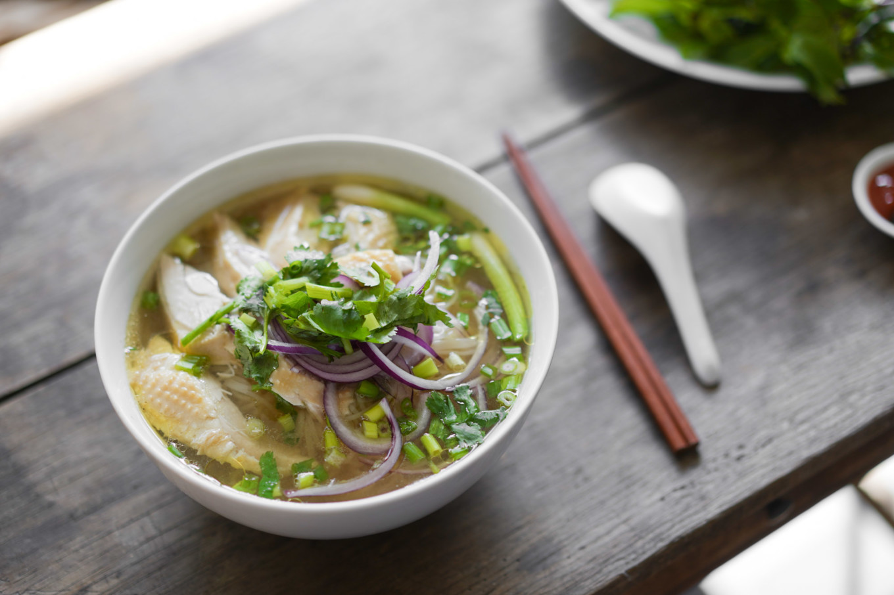

Chicken Pho

Description
Chicken Pho - called Pho Ga in Vietnamese is a
chicken version of Beef Pho. Vietnam's most famous food export.
If you're a Pho fan, you will love this chicken version because it's easier to make
than Beef Pho - no need to hunt down specific bones, just use chicken pieces.
Ingredients
- Cilantro
- Sugar
- 2 tsp Fennel
- 2 tsp coriander seeds
- 1 small bunch of Coriander
- 5 pods of Star Anise
- 4 Cloves
- 1 Cinnamon stick
- 6 tsp white sugar
- 3/4 tsp salt
- Ginger
- Onions
- 8 tsp Fish Sauce
- 3 pounds of Chicken Thighs
- 2 limes
- 360 grams of Vermacelli Noodles
- 1 small bunchThai Basil
- Mint
- 3 cups Beansprouts
- 2 Green Onion Stems
- 2 Quarts of water
- Hoisin Sauce
- Sriracha
- Red chillies
Steps
- Heat 6 quarts of oil in a pot. Place ginger and onions facedown and leave
undisturbed for 2 minutes until blackened. Then and leave for another 2
minutes.
- Add water and remaining broth ingredients except for salut., Bring it
to a simmer, then lower heat so it's simmering very gently.
- Simmer gently for 1.5 hours and scoop of any scum that rises to the surface
- Remove chicken and strain broth to a clean pot.
- Add sakt and bring broth to a simmer. Broth should be on the salty side.
- shred the chicken meats, discarding the bone and skin